G1 · wt 13.10 · FB/IG · 1080×1350
Tło: AI (Nano Banana Pro) · nakładka HTML
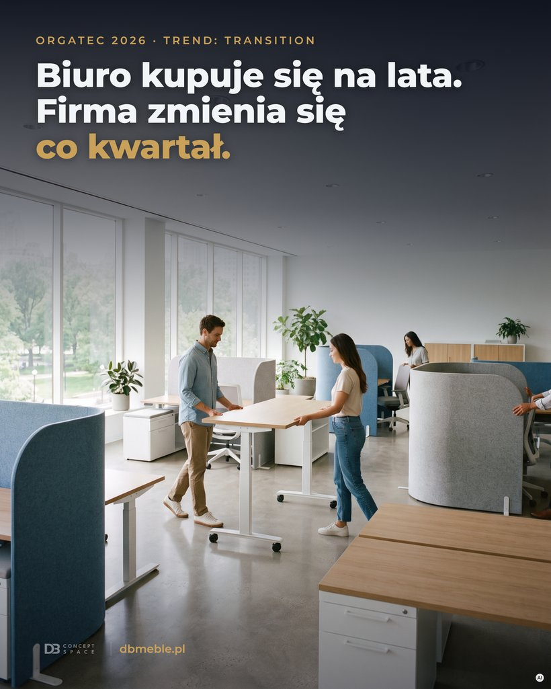
DB_2026-10-13_G1_biuro-na-lata.pngG2 · śr 14.10 · LinkedIn karuzela · 7× 1080×1080
Tła: AI · PDF pod LinkedIn ⬇ PDF karuzeli (DB_2026-10-14_G2_5-pytan-przed-zakupem.pdf)
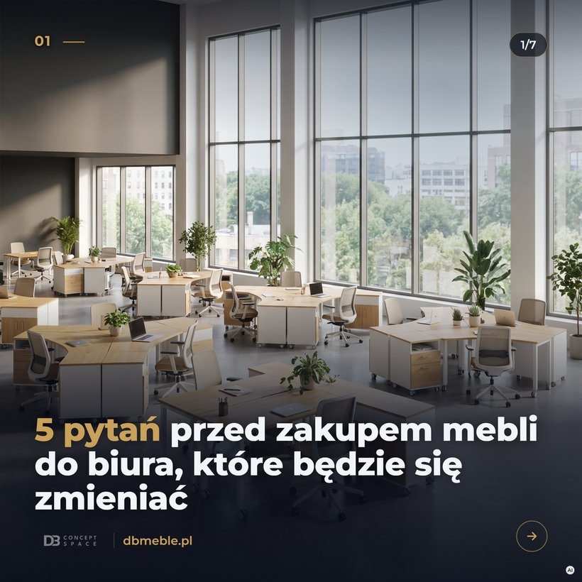
DB_2026-10-14_G2_5-pytan_s1.png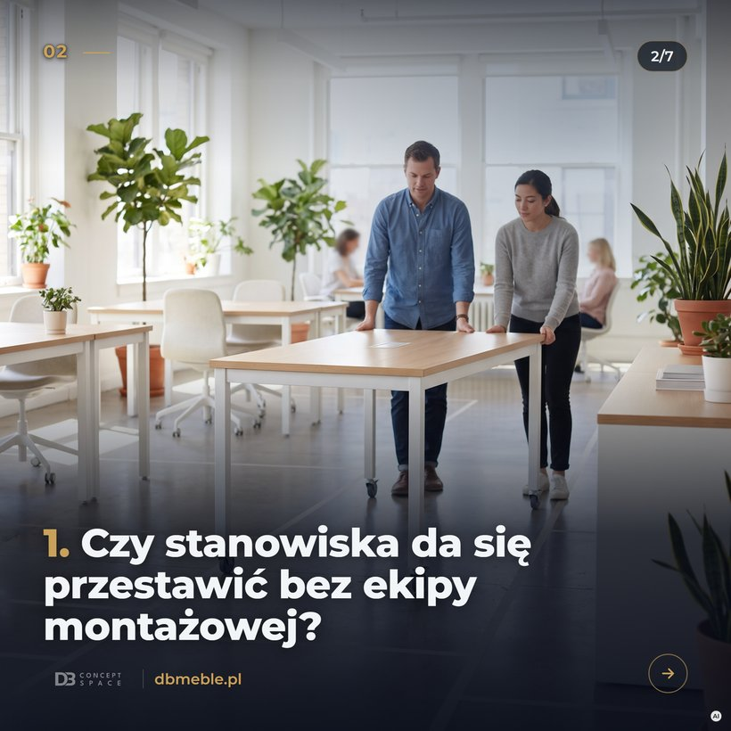
DB_2026-10-14_G2_5-pytan_s2.png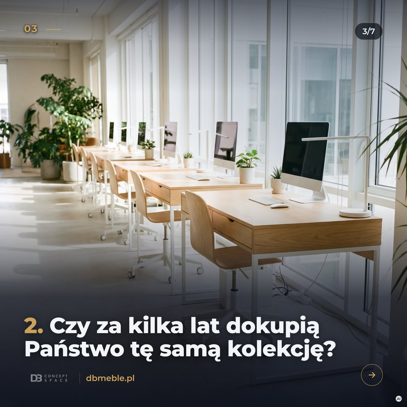
DB_2026-10-14_G2_5-pytan_s3.png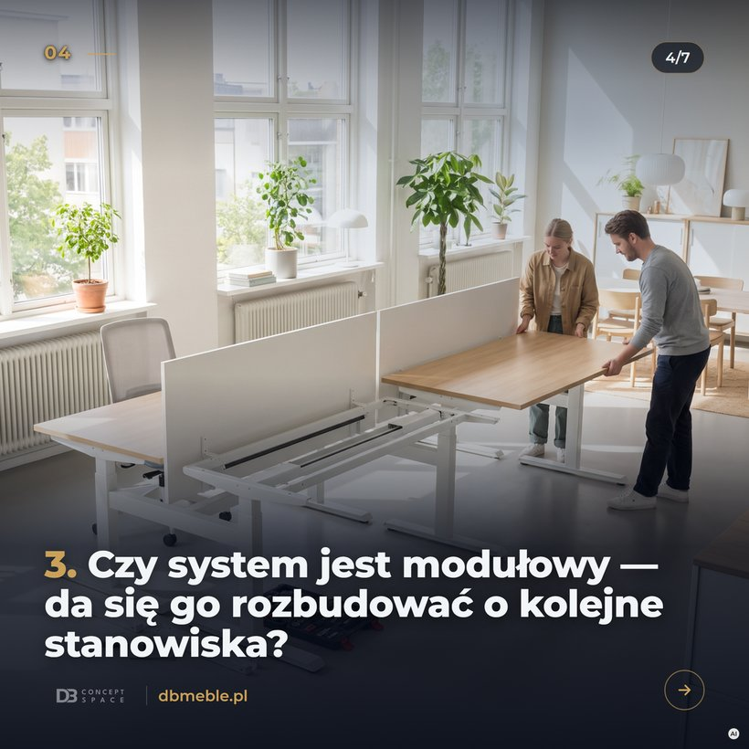
DB_2026-10-14_G2_5-pytan_s4.png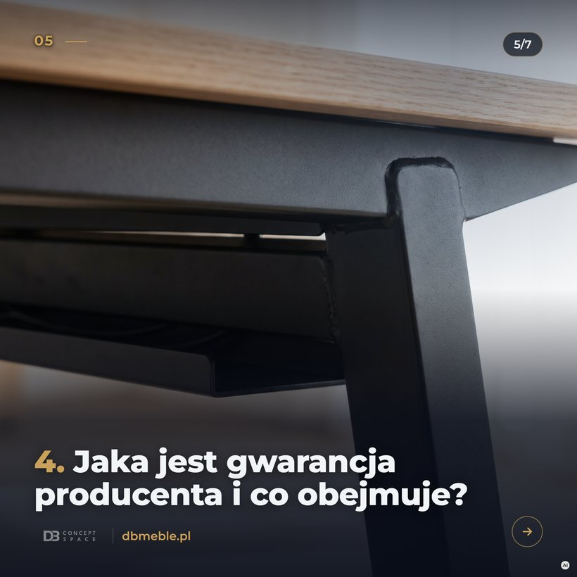
DB_2026-10-14_G2_5-pytan_s5.png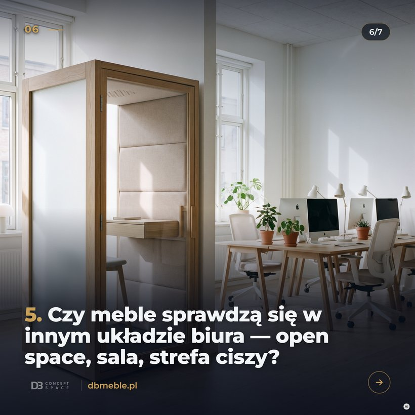
DB_2026-10-14_G2_5-pytan_s6.pngDB_2026-10-14_G2_5-pytan_s7.pngG3 · czw 15.10 · FB/IG · 1080×1350
Zdjęcie producenta Profim (Pace) — bez AI
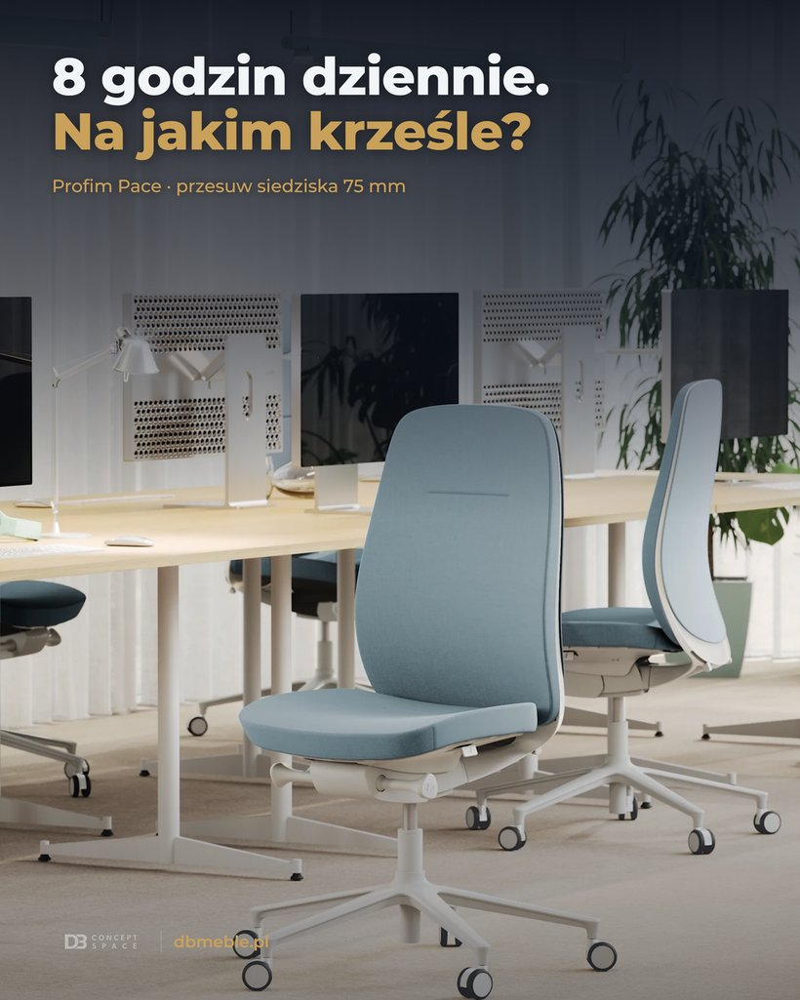
DB_2026-10-15_G3_8-godzin-pace.pngG4 · pt 16.10 · LinkedIn karuzela · 5× 1080×1080
Tła: AI · PDF pod LinkedIn ⬇ PDF karuzeli (DB_2026-10-16_G4_jak-dobrac-krzeslo-biurowe.pdf)
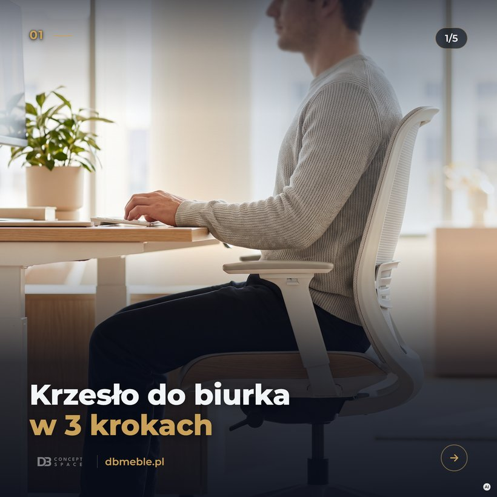
DB_2026-10-16_G4_krzeslo-3-kroki_s1.png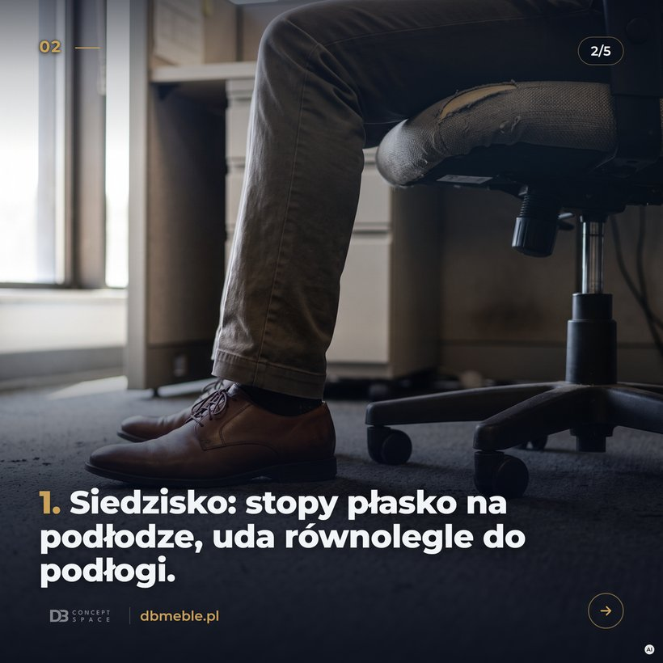
DB_2026-10-16_G4_krzeslo-3-kroki_s2.png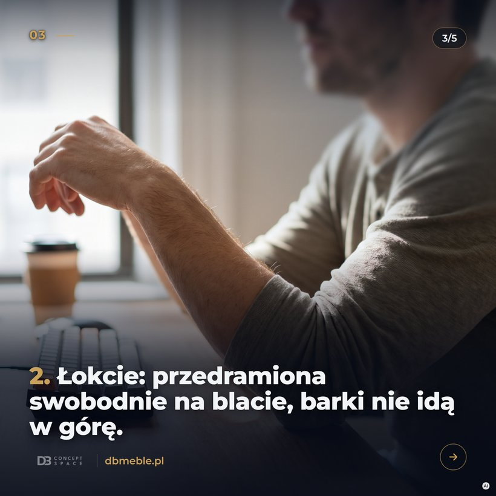
DB_2026-10-16_G4_krzeslo-3-kroki_s3.png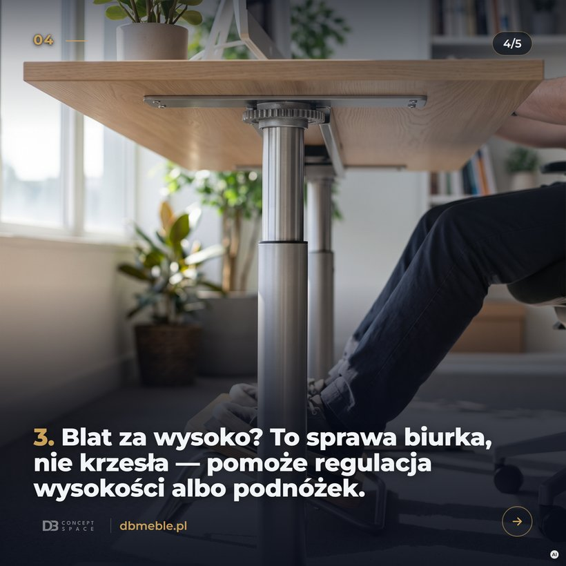
DB_2026-10-16_G4_krzeslo-3-kroki_s4.png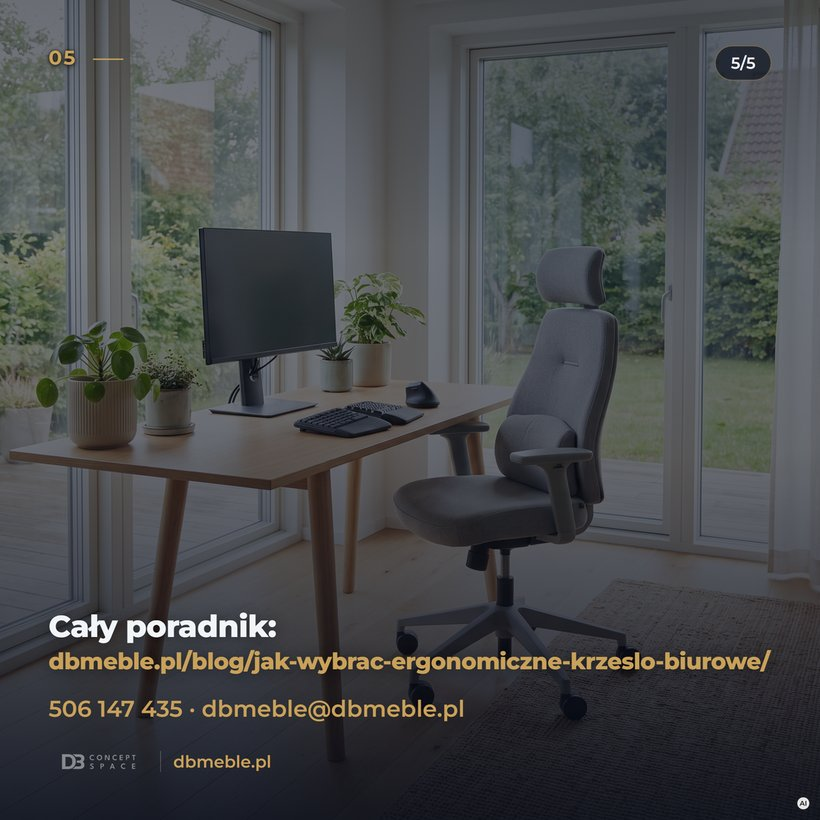
DB_2026-10-16_G4_krzeslo-3-kroki_s5.png